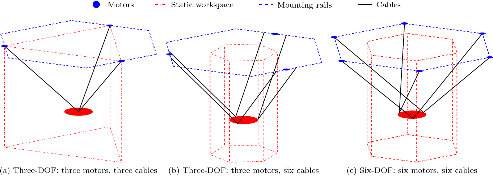
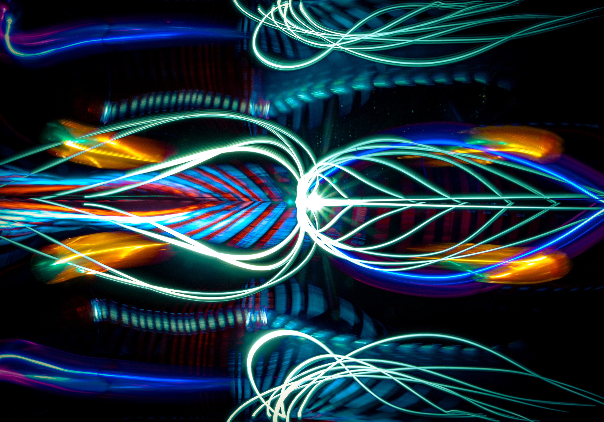
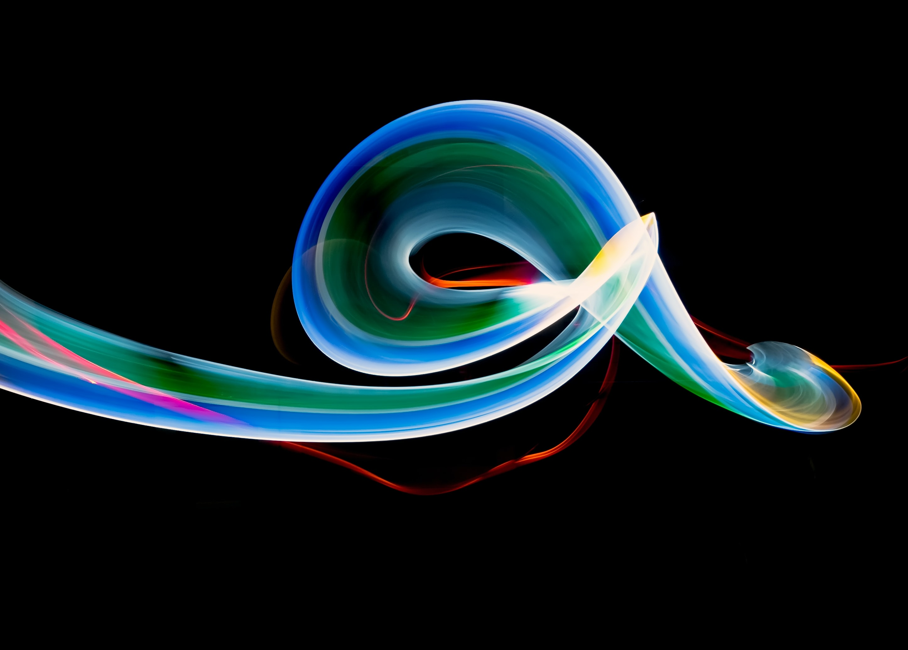
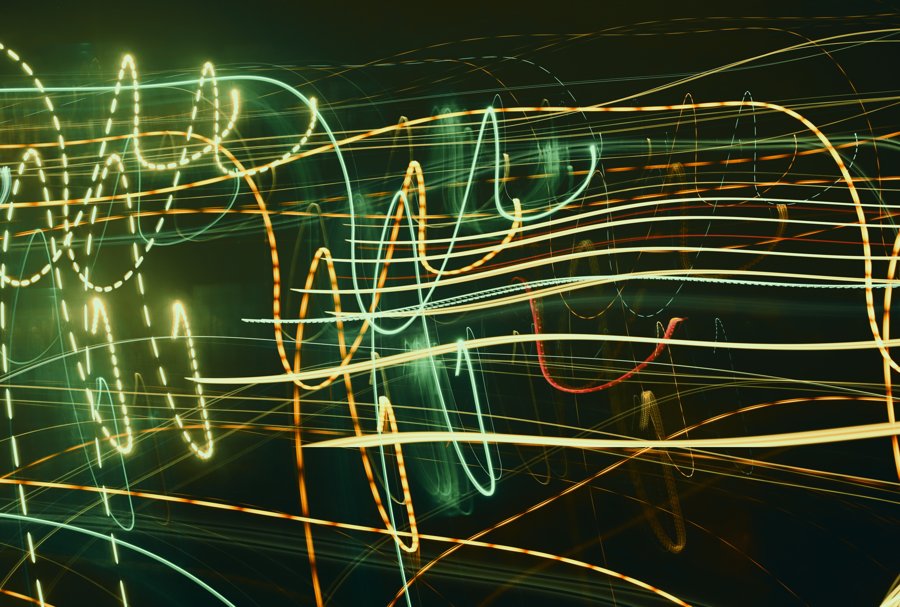
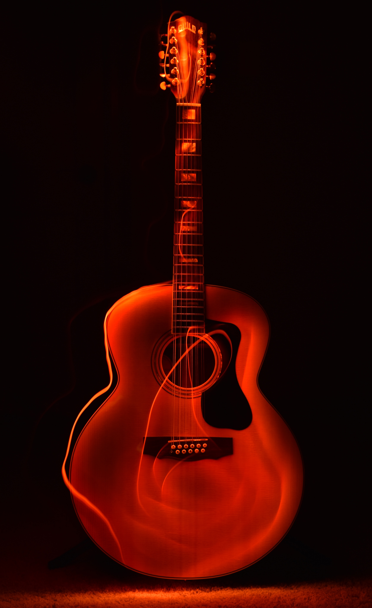
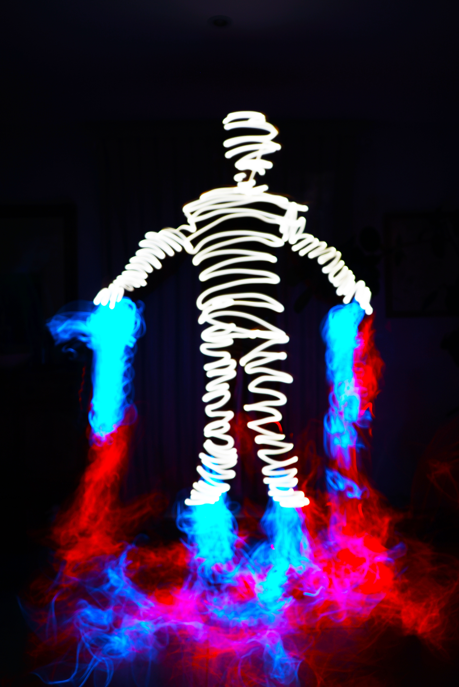
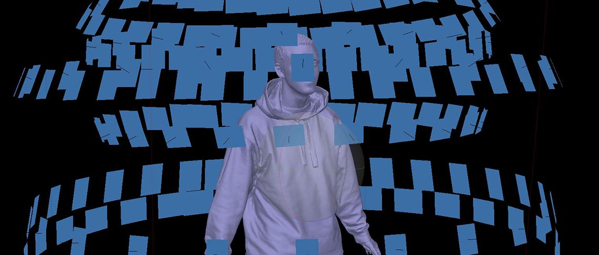
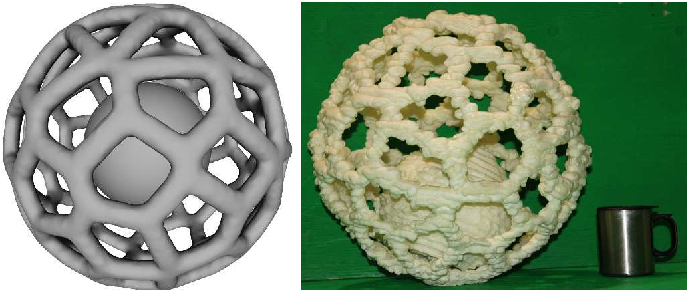

Proyecto xxxxx
Este es un proyecto del colectivo artístico formado por Ignacio Fourmentel y Miguel Grassi para presentar en la convocatoria de BienalSur 2023. El colectivo está formado por los miembros del área de arte robótico del Laboratorio de Arte Electrónico e Inteligencia Artificial (LAEIA) de la Universidad Nacional de Tres de Febrero (UNTREF): Ignacio Fourmentel y Miguel Grassi.
Robot básico
La instalación estaría constituida fundamentalmente por un robot que se desplaza por un espacio físico tridimensional controlado por cables de acero y tres (o seis) motores paso a paso fijados a paredes y/o soportes de pie.
|  |
|---|
| Tipos de robots accionados por cables de acero - Barnett, Gosselin (2015) |
Ese robot portaría un conjunto de pixel LEDs (WS2811 o similar) formando paneles, una serie de anillos superpuestos u otro cuerpo similar a determinar, constituyendo una pieza de alrededor de 30 cm de ancho y otros tantos de altura que denominaremos Cabezal.
El Cabezal, suspendido en el aire por tres o seis cables de acero, podría desplazarse dentro de un espacio cúbico imaginario de alrededor de 3 metros de aristas. Los LEDs estarían controlados por un ESP32 on board en el propio Cabezal. Se contempla la posibilidad de incluir en el mismo la batería que alimenta todo el conjunto, para evitar cableado desde la instalación fija al Cabezal móvil. Las posibilidades de comunicación inalámbrica (WiFi y BT LE) del ESP32 permiten el control externo sin dificultad.
Una o más cámaras externas son sincronzadas electrónicamente con los movimientos del robot y con el control de sus elementos lumínicos. Esa actividad sincronizada permite la generación de imágenes no sintéticas de gran variedad y riqueza visual, constituyéndose un instrumento de fuerte potencial expresivo.
Elementos visuales
Inicialmente se considera la idea de representar en el aire figuras lumínicas tridimensionales sólo visibles mediante una cámara utilizando conceptos fotográficos y cinematográficos tales como Light Painting, Light Writing, Bokeh, Time Lapse y Stop Motion. Las imágenes pueden ser abstractas o figurativas, si se incorporan personas u objetos al espacio y pueden ser vistas por el público, en tiempo real, en pantallas o proyecciones in situ y en forma remota por internet.
  
Elementos interactivos
El público puede interactuar con la obra de diferentes maneras. La más simple consiste en ingresar al espacio captado por las cámaras, alterando con su presencia y movimiento los patrones generados. En forma remota es posible modificar parámetros de generación de luz y movimientos, influyendo así sobre los resultados visuales generados.
Fundamentos conceptuales
El uso de los recursos foto y cinematográficos mencionados se vincula fuertemente con la idea del tiempo, la memoria, la persistencia y la percepción humana de estas variables. La posibilidad de desplazamiento físico y temporal simultánea y controlada que brinda este robot permite el desarrollo de múltiples conceptos que se pueden alinear con varios de los ejes curatoriales de la convocatoria, especialmente Memorias y Olvidos, Modos de Ver y Constelaciones Fluidas.
La idea de relacionar las visuales con la pesca comercial indiscriminada en la milla 200 del litoral marítimo argentino encuentra además relación con el eje Conciencia Ecológica.
Otras posibilidades técnicas
Cambiando el elemento portado por el Cabezal, el dispositivo robótico planteado permitiría su uso en múltiples diferentes formas de expresión artística. Montando en el mismo una cámara, por ejemplo, puede actuar como un scanner tridimensional de gran escala, para capturar modelos 3D de personas u otros objetos de tamaño similar mediante técnicas de fotogrametría.

Si, en cambio, se le instala un extrusor adecuado, se podrían generar objetos de gran tamaño mediante técnicas similares a las de la impresión 3D utilizando todo tipo de materiales experimentales, en diversas formas creativas.
